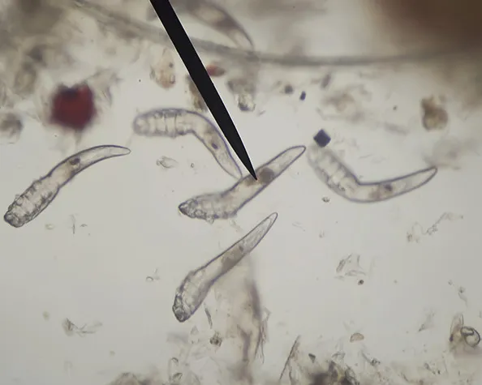

What Is Demodex?
The Demodex mite is a type of parasite that lives on humans and can reside in hair follicles and sebaceous glands. These mites are arachnid (eight-legged) and invisible to the naked eye, varying in size from 0.1mm to 0.4 mm long. They typically live on the face and in the hair follicles of the eyebrows, eyelids, roots of the eyelashes, facial hair, and around the ears and are associated with various skin problems of the eyes and face, such as blepharitis and acne rosacea.
Demodex can affect humans at any age, but their presence increases in prevalence with increasing age. Immunity compromised patients such as diabetics, patients on long-term corticosteroids or chemotherapy, or patients who have HIV/AIDS also have increased risk and prevalence of Demodex infection. Usually, when the immune system is weakened and the parasitic population has colonized, this disease can badly damage the skin.
How Can Demodex be Transmitted?
For transmission of mites from one person to another, direct contact of hair and sebaceous glands on the nose, or dust containing eggs is required. Since the disease processes begin when there is an overpopulation of Demodex, the vast majority of cases of mites go unobserved and don't show any adverse symptoms. However, in certain cases, the mite populations migrate and multiply in the eyelashes.
What Are The Types of Demodex?
There are two existing types of Demodex mites: the longer kind, Demodex folliculorum, which live in the hair follicles and the short ones, Demodex brevis, which live in the sebaceous (oil) glands in the skin.
What Are The Symptoms of Demodex?
In the early stages, there are often no noticeable symptoms, but if left untreated Demodex can progress. Symptoms vary among patients and may include dry eye, red eyes, severe itching along the eyelid margin and eyebrow, especially in the morning, eyelid irritation, burning sensation, foreign body sensation that seems to originate beneath the eyelids, heavy lid, and blurry vision. One of the earliest signs of mite infestation is cylindrical dandruff (CD), which is the accumulation of fine, waxy, dry debris that collects at the base of the lash and extends up to 2 mm along the length of the lashes and is most noticeable on the upper lashes.
How Is Demodex Diagnosed?
Demodex mites can be diagnosed by a slit-lamp evaluation or by carefully removing and viewing an epilated eyelash under the microscope.
How Is Demodex Treated?
Initial treatment involves an in-office lid scrub/débridement which starts with a drop or two of long-lasting anesthetic being instilled. The lashes and eyebrows are then thoroughly débrided. Next, an antibiotic/steroid ointment is applied to help keep the mites from moving and also possibly suffocate them. The steroid also helps in calming down the inflammation secondary to the chemical and mechanical irritation of the in-office treatment, in addition to suppressing any possible inflammatory cascade associated with the decaying mites. The patient should return in 2 weeks and repeat the in-office treatment.
What Are The Instructions for Patients with Demodex?
The patients diagnosed with Demodex need to know a few simple instructions:
- Immediately wash bedding and pillowcases in hot water and dry in a heated dryer before beginning treatment, and once a week thereafter.
- Wash face, nostrils, hair, external ear and neck with a non-soap cleanser twice daily.
- Scrub the eyelids with a mild (baby) shampoo.
- Avoid using makeup for at least 1 week and discard all old makeup.
- Avoid oil-based cleansers, greasy makeup, lotions, and sunscreens which can provide further "food" for the mites.
- Exfoliate face once or twice a week to remove dead skin cells and trapped sebum. Keep pets away from sleeping surfaces.
With the proper medical care, treatment, and hygiene, the Demodex count usually drops to zero in 4-6 weeks without recurrence in the majority of cases. Patients receiving therapy show dramatic improvements in symptoms, eye inflammation, tear film stability and vision.